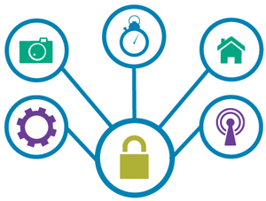

让我们先来看两个故事。
故事一：小张是聚码科技的开发者，历经无数个不眠之夜，终于开发出来某牛叉的产品。产品推出后，获得了市场认可，销量喜人。隔壁老王贿赂了小张团队的路人甲，盗取了固件，在非法作坊生产盗版产品。结果，某宝上充斥低价高仿的盗版产品。小张走投无路，宣告破产。
故事二：小张购买了一套智能家居。小张可以通过手机APP控制你的电灯、热水器、空调器、电饭煲、窗帘等，从此和女神过上幸福的生活。但是隔壁老王惊喜的发现，只要靠近窗户，就能连接到你家的设备，因此可以在小张睡觉的时候开灯，在夏天开暖空调，在洗澡的时候关热水器。小张的女神不堪其扰，结果和小张分手。
以上两则故事当然是虚构的，但是，随着各种新奇的物联网产品的增多，隐私与安全问题自然而然的又出现在了我们的面前。作为厂商，也不愿意自己的物联网设备轻而易举的被破解或者被山寨。作为消费者，没有人愿意别人看到自己的隐私信息或者操控自己的私有设备。
1. 设备注册认证，该方案用于防止产品被山寨，其原理如下：
2. 用户授权认证，该方案用于防止产品被破解，其原理如下：
软件
请发邮件至hello@jumacc.com，客服人员会和您联系。